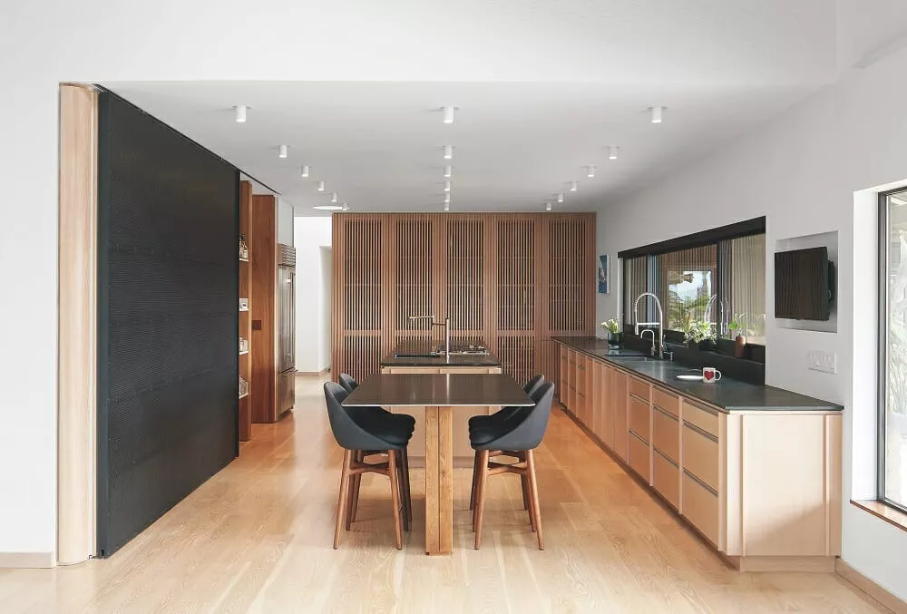
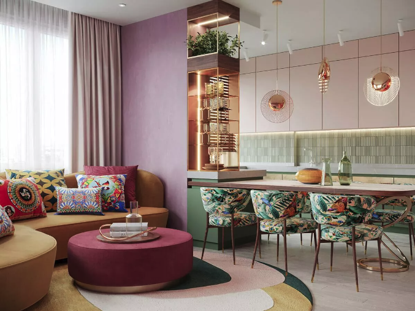

Welcome to my Home Decoration Website
As part of the education to become a skilled web developer, this website is designed to show different choices that are essential for good web design. The task is to create a website for home decor. In this delivery, color selection and analysis of colors and textures have a particular focus. Further down you can see some examples of interior decoration in the home.
Decor examples
-
A functional and beautiful kitchen
Decor description:
The kitchen has a beautiful symmetry. There is good lighting, many light bulbs in the ceiling. Above the kitchen counter there is a window with a beautiful view. The colors are pleasant and calm.
Decor photo:
 -
Sofa group with tasteful design
Decor description:
The sofa group is tastefully furnished. The colors in the room complement each other. High ceiling height gives the room an airy feel. The base for the table has dark and light stripes that bring life to the room.
Decor photo:
-
A delicately decorated living room
Decor description:
A tinge of pink color creates the impression of warmth and comfort. The colors pink, brown and green complement each other well. A large window provides good light conditions.
Decor photo:

Some words about good design
Design is not an exact science, in the sense that you cannot always say that something is bad or good. But sometimes you can do it more than other times.
The human eye searches for harmony and symmetry. Balance can be another word for symmetry.
Colors on a website are about psychology. Psychology is not an exact science either, but we have to deal with it nonetheless, because emotions are awakened by colors, and we often wish that the person looking at the website should feel what we want them to feel. In this sense, you can say that color selection is about manipulation.
One often distinguishes between "warm" and "cold" colors.
Brown is a natural color, which is associated with relaxation, endurance, reliability, confidence, warmth, comfort, safety, and it is considered to be conventional and sometimes sophisticated. These are key words that I feel fit in well for a website that will be about interiors.
I present three examples of interiors. These are framed in a greyscale frame. This has been done
deliberately because
gray tends to be a neutral color, preferably a bit conservative, but also because the message is
serious.
I have used white color as background for the decor examples. White symbolizes simplicity and purity. Simplicity I feel harmonizes well with the principle "keep it simple". The links in the menu alternate between white and black, depending on whether the status is "hover" or not.
The basic color in the logo is brown, surrounded by a lighter part with the light brown text "Home decoration", and it harmonizes well with the fact that brown and shades of brown have been chosen for the entire website. The H1 headings are also in light brown, on a light background.
As a principle, a color on a web page should be used on more than one element. This principle has been applied to this website. It gives an impression of visual consistency and predictability. Safety in a way.
I have used "shades and tints of brown". It can be difficult to make a strict distinction between brown and orange. But both colors have a lot in common. They are both two warm colors. They symbolize kindness and optimism. I have used both "shades" and "tints" of brown. Mostly "shades" in the menu and footer. And mostly "tints" in the decor examples.
I use an analogous color scheme. Colors that stand next to each other in the color wheel. The purpose is to create mutual harmony between the various sections on the website. I feel that a monochromatic color scheme would create too little contrast. It becomes a bit too minimalistic in this context. I use an analogous color scheme to create the same undertone for the entire website. If I were to use complementary colors, I feel the tension would be stronger. A home should be a place where there is harmony, not both heat and cold. By using split complementary colours, the tension would be reduced, but I feel that this tension is also unnecessarily large in this context. A triadic color scheme could perhaps have been an alternative, but again consideration for calm, warmth and harmony in the home wins.
I have not used textures on the page. Or possibly you could call the grid in the logo textures. Nor have I felt the need to highlight any section of the website over others.
In the lesson, it is said that "shapes" can bring "interesting effects" to a website. But nothing is said about what is interesting and how the effect may be perceived by people. There can be very individual perceptions of what an effect of something is like. In any case, I feel that it will be excessively experimental to try this.
My design choices regarding colors
Keep it simple
It is a general principle in web development to keep things simple. This should also apply to color choices. In a way, it is made easy for the user if he only needs to deal with a limited number of colours.
Shades and tints of brown
I have created a simple logo with inspiration from this website: https://www.brandcrowd.com/maker/logo/pantheon-architecture-building-253863?isVariation=True . I have made some changes and customization.
I got inspiration for the color choice here: https://color.adobe.com/nb/explore.
It seems that brown is a popular color when it comes to interiors, see https://www.bhg.com/decorating-with-brown-trend-6835454.
Kristina McGuirk writes in the section «Why Shades of Brown Are Seeing a Resurgence”:
«Brown was a memorable part of both 2000s and 1970s decor, and now similar influences are helping bring the color back. Like the 2000s, the shift toward warmer colors comes, in part, because we’re responding to the prolonged uncertainty of the pandemic by incorporating more comforting colors into our homes”.
Jessica Bennett recently wrote an article "18 Living Room Ideas with Brown Couches That Aren't Boring at All": https://www.bhg.com/rooms/living-room/ways-to-decorate-with-a-brown-sofa/.
This may indicate that brown as a basic color is about to have a renaissance in interior design.
In the article "5 Kitchen Color Trends Designers Recommend for 2022 and Beyond", see https://www.bhg.com/kitchen/color-schemes/inspiration/kitchen-color-trends/. Jessica Bennett writes, among other things, that natural earth colors are on the rise as a trend:
“5. Rich Earth Tones Vroom foresees kitchen color trends transitioning from softer whites and blues and toward warm, grounded hues like terra-cotta, blush, and even plum. "The beachy or farmhouse color palettes are taking a step back, and those rich earthy tones are stepping up," she says. You can also expect to see more natural wood cabinetry in kitchens as homeowners embrace the texture and color inherent in the wood”.
Textures must have a purpose...
...and, to be honest, I haven't found any element where texture would have any positive effect.
Possibly a negative
effect. As a distraction. As an opponent of the "keep it simple" principle. I am open minded to
suggestions that indicate I am wrong.
My design choices regarding typography
Some basic guidelines
- Limit the number of fonts to 2, maximum 3
- By using a serif and a sans-serif font, you can achieve a dynamism and sophistication that is difficult to achieve with just one font.
- Use serif for H1, and sans-serif for H2.
- The letter structure is essential to understand which fonts go together
- Sometimes you can choose fonts that have been developed by the same person
- Body text must be easy to read
- Font size is important for readability
Explanation of guidelines above
To support point 1 above, I will refer to "Design for Hackers", pages 298-307:
“You can get a tremendous amount of versatility from just one font (see Chapter 7), but sometimes using more than one font at a time can improve communication, and make your design appear more dynamic. Finding typefaces that go together well can be challenging. There are some rules of thumb for pairing faces, but there are exceptions. Truly understanding what makes types pair together can ensure that you make wise choices when you add fonts to your design”.
The purpose of different sized fonts for h1 and h2 is to create a hierarchy that makes the text easier to read.
In the text you are currently reading, I have chosen to underline "To support point X above" to tell the reader about this reference. For this styling I have not used css, but styled directly in html, see: https://blog.hubspot.com/website/how-to-bold-in-html#:~:text=To%20bold%20text%20simply%20for,the%20specific%20span%20element%20only.
To support point 2 above, I will refer to "Design for Hackers", pages 299:
“Although there are plenty of confusing and conflicting “rules” about typography, the common advise to use no more than two fonts – one of them serif, and one sans-serif – is pretty sound. You can easily create a beautiful and clear hierarchy using only one font family, but adding another family into the mix can provide dynamism and sophistication that may be hard to achieve with just one font. However, there isn´t much point in using two different serif fonts or two different sans-serif fonts. Mixing two serif or two sans-serif types can be confusing to the viewer; plus, it doesn´t provide enough visual variety to justify the added complexity”.
To support point3 above, I will refer to "Design for Hackers", pages 299:
“In print applications, serif faces are generally regarded as more readable than sans-serif faces.
So, if two fonts are
being used, a sans-serif face is typically used for titles and headers, while a serif face is used
for body copy.
The lower-resolution of the web leads to different habits, however (see Chapter 3 for more on why).
Sans-serif typefaces
are regarded as more readable on-screen, so when a second font is used, it´s often av serif typeface
for more
sophisticated-looking headers and titles”.
To support point 4 above, I will refer to "Design for Hackers", pages 301:
“To understand what makes two fonts go together well, you need to understand the various attributes that typefaces have. The letter structure that I described earlier have a strong influence on how well two fonts go together, but other important characteristics include texture and character width”.
The width of the letters should be the same. Examples of this not being true are Verdana and Times New Roman. Examples of this being true are Garamond and Gill Sans (Design for Hackers, page 304). By the way, a good tip is to avoid Times New Roman (Design for Hackers, page 310):
“A major consideration in the 1931 design of Times New Roman was to save space in the British newspaper, The Times. It´s a newspaper, so naturally it was cheaper to print it in a font that used less paper”
To support point 5 above, I will refer to "Design for Hackers", pages 306:
“Sometimes you can choose fonts that have been developed by the same person. For example, Eric Gill has designed both Joanna and Gill Sans. Therefore, these fit well together”.
The reason for such an assumption is that one and the same person probably have had an eye for their own fonts to fit well together, so that they should be complementary in use.
Some fonts have become web standards, see "Design for Hackers", page 69:
“No type designer´s fonts have reached more eyeballs in this category, than those of Matthew Carter. Carter has designed typefaces that are current standards on the web, including Verdana, Tahoma (Verdana´s slimmer brother), and Georgia”.
To support point 6 above, I will refer to the website "How to find the right combinations fr your web design" see https://webflow.com/blog/font-pairing?utm_source=google&utm_medium=search&utm_campaign=Google-Search-Dynamic-Search-Ads-Global-BBSS&utm_term=dsa-1729073406948___617245336990___ss_paid-bb&gclid=Cj0KCQiAz9ieBhCIARIsACB0oGLlW7qRal43xw5ZX3LGMEuBh6jZIrDmi8sg5T1MkvK8LNWS_d4BD9waAj4CEALw_wcB/.
Here it says that:
«Headings offer more freedom in using stylized typefaces due to their larger scale. For body copy,
you need a font
that’s easy on the eyes in smaller text sizes”.
«Font pairs should be noticeably different — for example, don’t use a sans serif typeface in a
header that’s strikingly
similar to a sans serif that you’re using in the body copy. You want distinct combinations with
typefaces that are
visually different but still complement each other”.
The article "Find the perfect Google Font pairing for your website" says: https://99designs.no/blog/tips/find-perfect-google-font-combinations-website/ says:
«One last tip: just because a Google “web” font exists doesn’t mean it’s right for a website. Scroll down the list and you’ll see a lot of fonts that are hard to imagine in actual usage. If you suspect a font might be too hard to read, it probably is.
Also remember not to worry too much about this. As in real life, there’s no “perfect” pairing. If you find a font combination you like, and it’s readable, go with it, and have fun!»
I found an article - "20 cool fonts for web and graphic design - which reference to a couple of fonts that go for good readability: Inter and EB Garamond, see: https://webflow.com/blog/cool-fonts
Both of these fonts are free. Most others cost money.
It is said about Inter:
«Designed by Rasmus Andersson and published through Google Fonts (it’s free!), Inter is a versatile and readable typeface.
With the range in its styles, this is the ideal font for traditional uses, replacing sans-serifs such as Arial. Inter is suitable for whatever the digital medium, be it a web page, iPhone, or Android. Consider Inter your go-to font if you’re searching for a conventional typeface with a bit of oomph!”
It is said about EB Garamond:
“If you’re looking for a serif font that is both girly and refined but want to explore typefaces outside of the typical Playfair Display, EB Garamond is the font you’ve been seeking.
Designed by Georg Duffner and published through Google Fonts, this typeface is a beaut. Its classical body and form invoke a timeless feel — truly an ideal rendition of the Garamond font family.
EB Garamond comes in a variety of styles, from regular to medium, italic, semibold, and bold. This humanist font feels fresh yet retains the calligraphy style that made it the preferred typeface since the mid-16th century.»
To support point 7 above, I will refer to the article "Your Checklist for Clear, Readable Website Text" see https://99designs.no/blog/tips/find-perfect-google-font-combinations-website/.
Here it says that:
“A typical rule of thumb you’ll see on the web is to keep your body text at least 16pt. That’s a good place to start, but keep in mind that that number is entirely dependent on what font you’re using”.
The book "Design for Hackers" (page 74) gives a guideline for how large font size you can use:
“On today´s screens (about 100 ppi to 150 ppi), stick with web-standard fonts at sizes below 30 px”.
Font size can be specified in px, em and rem.
px: Default = 16px for all browsers. px indicates absolute size, not relative to the parent element.
em: Default = 16px. "m" refers to the height of the font. em is a relative size, relative to its nearest parent element. 1 em = same size as closest parent element.
rem: Default = 16px. rem is also relative, but relative to the root html element. rem was introduced in 2011. 1 rem = 1 em.
The line-height should always be larger than the font-size. Use a percentage for the line-height, so that it is relative to the font-size. For example 150%. The value can also be 1.5 without a unit, which means the same as 150%. Advice: Use relative units to make it more flexible with varying font sizes.
Classification of fonts
One way to classify is to divide the fonts into two main groups: Web-Safe Fonts and Web Fonts, see: https://www.linkedin.com/learning/css-essential-training-1/web-fonts-and-google-fonts?autoplay=true&u=43268076.
Another relevant reference is:: https://www.linkedin.com/learning/css-essential-training-1.
Web-Safe Fonts requires that the font is pre-installed on those who will view the website. It is a hopeless assumption, which makes this choice irrelevant in my opinion.
Web Fonts are not pre-installed on the computer. There are two types: Internal Font Sources and External Font Sources.
Internal Font Sources must be declared in the css file with @font-face.
With External Font Sources you link to third-party css files instead.
Examples of External Font Sources are Google Fonts and Typekit.
Typekit costs money, and is therefore not relevant for me to use in this context.
Then Google Fonts is a remaining very relevant candidate for my delivery.
Another way to classify is to divide the fonts into tree main groups based on the letter structure: Humanist, Geometric and Realist. The theory is that fonts that belong to the same letter structure go well together.
The reason why a group is called "Humanist" is that they originate from the humanist movement in the time of the Renaissance. Calligraphy is the art of writing, or the art of writing letters in an artistic way, see: https://snl.no/kalligrafi.
Geometric typefaces are influenced by circles, squares and triangles.
The Realist font style was created by Martin Wenzel in 2015. Martin Wenzel’s goal was to develop a typeface that combines grotesque and humanist styles. The result is a straightforward font, which is based on a precise design, see: https://weandthecolor.com/realist-font-family-by-martin-wenzel/62955.
Just a reminder: Keep it simple
With so many fonts to choose from, it can quickly become demanding.
Ina Saltz lists references to many websites where fonts can be found, see: https://www.linkedin.com/learning/typography-choosing-and-combining-typefaces/welcome?autoplay=true&u=43268076.
I think it's a bit naive to think that a large selection makes it easy to find something that fits. If it is not what Ina Saltz thinks, then one can ask if it is good advice. For my part, I would rather limit myself a bit.
You can often go along just fine by using just one typeface family. It ensures conformity and consistency. And if there are large variations within this family of fonts, it will be able to provide sufficient contrast.
Here we can build a natural bridge to the next section about Google Fonts, by mentioning the font Montserrat in the article "Montserrat Font Family": https://www.1001fonts.com/montserrat-font.html.
The article "Top 10 Google Fonts for your website's content" says thiis about the Montserrat font: https://webflow.com/blog/google-fonts.
“Montserrat is another well-known contemporary font. Created by renowned graphic designer Julieta Ulanovsky, Montserrat is now a staple among designers because of its versatility and wide range of weights — it’s great for just about anything. It comes in 36 different styles, from thin to black, and corresponding italics.»
Some words about Google fonts
The article "Top 10 Google Fonts for your website's content" says many positive things about Google Fonts: https://webflow.com/blog/google-fonts.
«Some of Google Fonts’ best features include that the fonts are:
Free: Google offers open-source fonts, which means they’re free to use. You can distribute and modify them according to your needs.
Ready for commercial use: Google Fonts are available for commercial use, so you can use them for marketing purposes or on any of your products.
Compatible with websites and Android OS: You can use Google Fonts if you’re developing an Android app, as long as you have Android Jelly Bean or a later version. Google also allows you to embed Google Fonts directly into your website, helping your branding stay consistent across platforms.
Good for branding: You can easily use Google Fonts on printed products, e-books, storefronts, jewelry, educational materials, and other surfaces.
Modifiable: You can alter a Google Font with any design software and use it commercially. You can change a font’s spacing, thickness, or slope.
The good news is that you don’t have to browse through hundreds of fonts and test different combinations to find the perfect font for your website. We’ve compiled a list of some of the best Google Fonts you can use for your website today”.
There are some disadvantages to Google Fonts, such as:
- They may slow down the rendering speed of your pages
- A lot of websites use Google fonts, so you will see your font choice in other websites
- The fonts are widely used, so best to avoid using the fonts in actual brand typography, for example in logos. .
- As the fonts are hosted elsewhere, if the service goes down there is nothing much you can do
But my assessment is that the advantages of Google Fonts far outweigh these disadvantages. In this context, I do not see these disadvantages as relevant.
Fonts that go well together
The book "Design for Hackers" has an overview on pages 308-309 of the most common fonts, and which fonts fit best together. According to the author, you don't need all the fonts in the world, the ones in this table hold plenty.
Here is a website containing a list of links where you can find Google fonts that you like and which at the same time fit well together in terms of design, see: https://99designs.no/blog/tips/find-perfect-google-font-combinations-website/.
Here it says, among other things, to read:
«There are a few sites you should definitely check out that recommend certain Google font combinations and show you exactly what they look like. If you don’t feel like reinventing the wheel, choose one of their combinations and run with it!”
Example 1: Vollkorn + Open Sans
Quotation of judgement:
«Here in the header, we’re using Vollkorn, a subtly playful serif typeface. We’ve paired it with Open Sans, a more neutral and plain sans serif. This pairing works well because though there is contrast, the subtleness of both of the typefaces make them visually complimentary».
Example 2: Montserrat + EB Garamond
Quotation of judgement:
“Here we’ve taken the serif EB Garamond at a smaller size in the body copy and combined it with Montserrat at a larger scale in the headline. Serif fonts work better for big chunks of copy when they’re at a smaller font size”.
Example 3: Libre Baskerville + Raleway
Quotation of judgement:
“The more pronounced serifs and angularity of Libre Baskerville contrast nicely with the thin linework of Raleway.»
Example 4: Open Sans + Lato
Quotation of judgement:
“Open Sans is a plain yet welcoming font, which means it combines well with many other fonts. Think of it like vanilla ice cream — it’s a solid base to build upon. Here we’re using Open Sans in the header, along with Lato in the body copy, another sans serif typeface”.
Example 5: Bubblegum Sans + Open Sans
Quotation of judgement:
«Bubblegum Sans has joyful stylized letters that make for a great pairing with the neutrality of Open Sans”.
Example 6: Poiret One + Lato
Quotation of judgement:
«Poiret One’s nuanced art deco-inspired lettering and thin linework make it an excellent modern font if you’re looking for a bit of sophistication. Pairing this typeface with a subtler typeface like Lato creates a sense of contrast that still works well together”.
Example 7: IBM Plex Mono + PT Sans
Quotation of judgement:
«Designed as an homage to IBM, IBM Plex Mono is a modern typeface with a visual identity perfect for startups and others in the tech realm. Pairing this monospaced typeface with PT Sans — which has a sharper geometry — creates a nice sense of contrast and visual hierarchy».
Example 8: Roboto Mono + Roboto
Quotation of judgement:
«We love Roboto for its high degree of legibility. This font combination, which pairs Roboto Mono with the standard version, is easy on the eyes».
Incorporating good pairing fonts for present and future use
I have created a separate css file and called it "typography.css".
Here I have collected some fonts for h1 and h2 that theoretically go well together.
I have then commented out the code that is not relevant, and tried out the pairing fonts in turn.
The fonts must fit into the already existing website. It is the font that must be adapted to the overall design, including color choice and hierarchy. Not the other way around. You get the best feel for what you think fits best by trying it out in practice.
This "arsenal" of fonts serve for usability testing.
The article "Website Usability Testing: Guide with Expert Tips"( https://www.jimdo.com/blog/diy-guide-to-website-usability-testing/ ) says:
“It’s a good idea to test with your customers or target audience, but you can also go ahead and test on your mom, your friends, anyone who you feel comfortable with».
But in this context, it is ultimately me who will decide the design choice. This is a way of holding myself accountable.
My choice of fonts
I choose to take into account all 7 guidelines above, except No. 5.
I choose fonts based on the letter structure. I choose the letter structure called Humanistic. Because I think it gives a kind of artistic design, which goes well with the theme of interior design.
I want to use fonts available as Google Fonts. For the reasons referenced above.
As h1 I choose Garamond, and as h2 I choose Gill Sans.
Much good has been said about Garamond above, and both fonts belong to the Humanistic letter structure.
I also think they fit well together when tested.
I have changed the color of h1. Based on feedback after delivery Design 2, ma1. The teacher suggested a bolder font. I have chosen that, but I have also chosen a more reddish colour, to create a better contrast with the background color.
h2 gets exactly the same color as h1, to support that these belong together in a hierarchy.